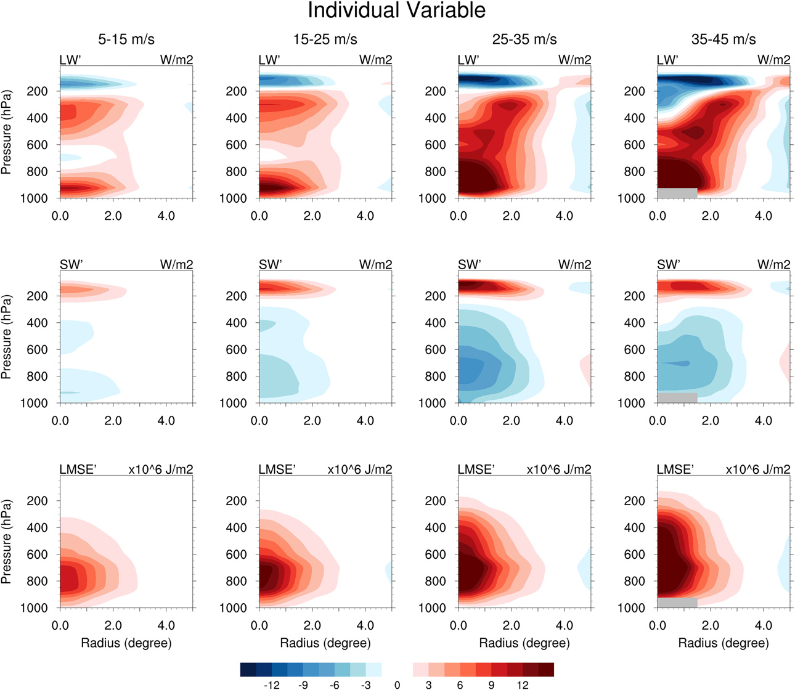
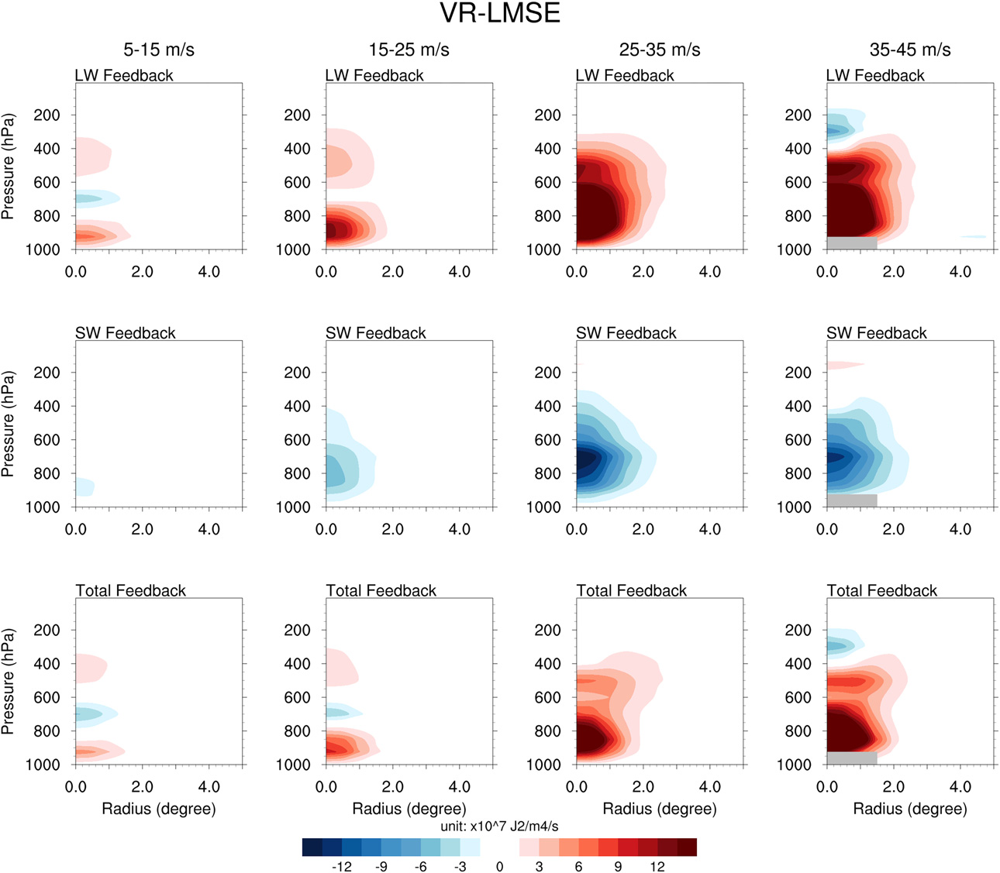
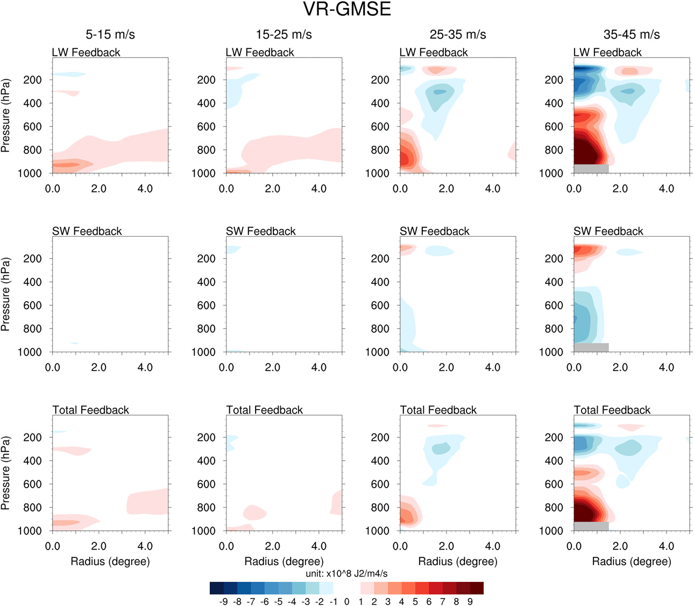
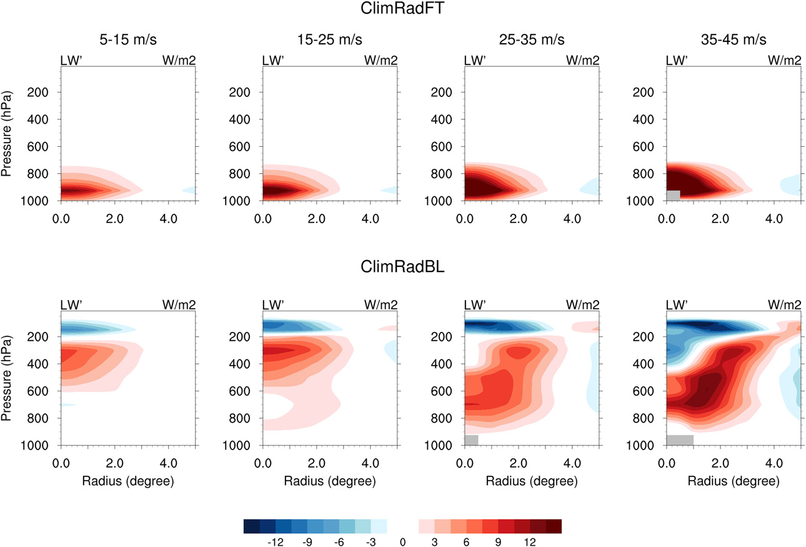

Vertical Dependence
Feedback influence depends strongly on vertical placement within the storm column.
Journal of Climate (2023)
Vertical MSE-variance diagnostics show that free-tropospheric radiative interactions are central to sustaining tropical cyclone development in realistic GCM experiments.
Vertical Dependence
Feedback influence depends strongly on vertical placement within the storm column.
Intensity Structure
Radiative effects vary systematically from 5-15 m/s through 35-45 m/s regimes.
MSE Budget Closure
Coupled diagnostics separate LW/SW feedbacks and advection-convergence contributions.
Paper Citation
Zhang, B., B. J. Soden, and G. A. Vecchi, 2023: A Vertically Resolved Analysis of Radiative Feedbacks on Moist Static Energy Variance in Tropical Cyclones. Journal of Climate, 36, 1125-1141. https://doi.org/10.1175/JCLI-D-22-0199.1
How do radiative feedbacks, partitioned by altitude and process, shape moist static energy variance and energetic amplification across different tropical cyclone intensity classes?
Extracted from Zhang et al. (2023), https://doi.org/10.1175/JCLI-D-22-0199.1.
Figure 1 (Extracted)

Figure 2 (Extracted)

Figure 3 (Extracted)

Figure 4 (Extracted)
